1M+
Rohingya refugees sheltering in the camps of Cox's Bazar.
— UNHCR
Women-led since 2009 · Cox's Bazar, Bangladesh
We protect women and girls from violence, open doors to skills and income, and back their leadership — in the Rohingya camps and the host communities of Cox's Bazar.

Building GBV evidence, together. Women responders from host and Rohingya communities after a JNUS training with the Global Women's Institute.
Why we exist
Around the world's largest refugee settlement, women carry the heaviest weight of crisis — and hold the keys to recovery. JNUS exists so that every woman and girl here is safe, heard and in the lead.
The reality
Since 2017, Cox's Bazar has hosted one of the largest refugee populations on earth. Host communities — already facing poverty, cyclones and rising seas — share their land, water and futures. Through it all, local women's organisations are first to respond and last to be funded.
1M+
Rohingya refugees sheltering in the camps of Cox's Bazar.
— UNHCR
52%
of the refugee population are women and girls.
— UNHCR
70%
of women in Bangladesh have faced violence from a partner in their lifetime.
— BBS & UNFPA, VAW Survey 2024
<1%
of gender-focused aid reaches women's rights organisations directly.
— OECD / AWID
What comes next requires all of us.
Donate now
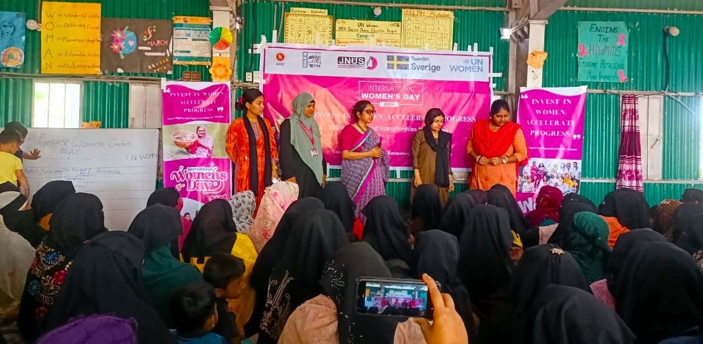
2009
Founded in Ramu
Who we are
Jago Nari Unnayon Sangstha — "Awaken Women Development Organisation" — is an independent, non-profit, non-political and women-led NGO founded in Cox's Bazar in 2009.
For over 16 years we have walked alongside women and girls from both host and Rohingya communities: running women's centres, answering survivors of violence, training entrepreneurs, building safe water systems and bringing women's voices to decision-makers from Ukhiya to Dhaka.
What we do
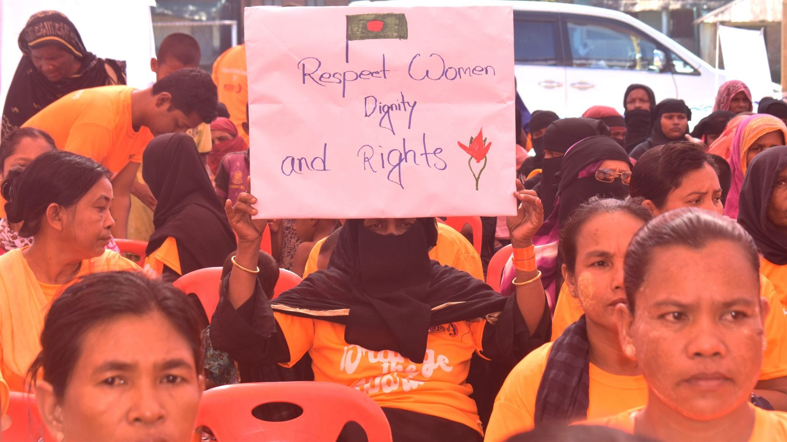
Case management, legal aid, psychosocial support and safe referrals for survivors.
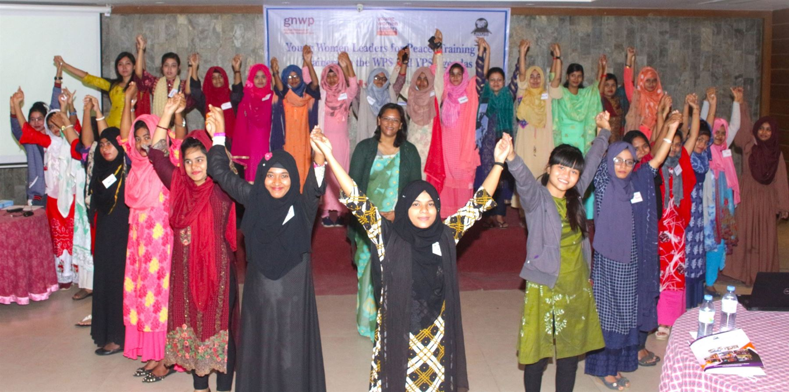
Women's centres, the Young Women Leaders Forum and the Women, Peace & Security agenda.
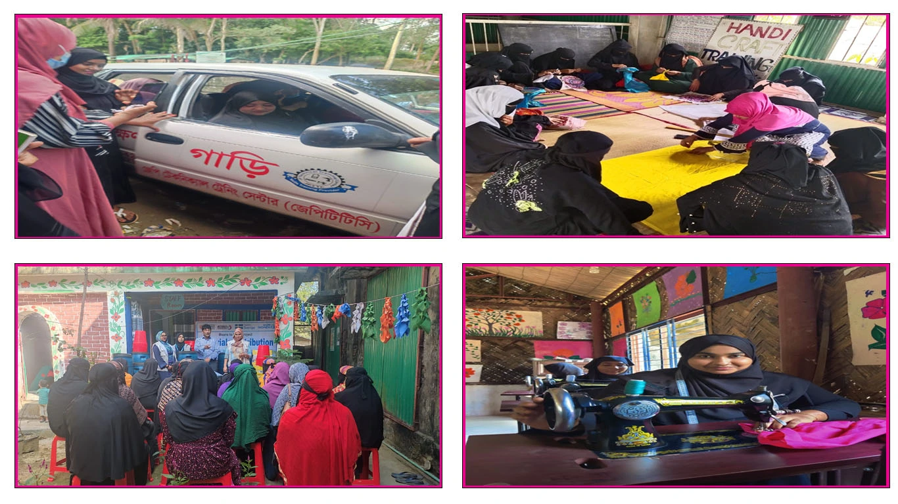
Tailoring, driving, baking, IT and more — plus Panchali, our social business for women's products.
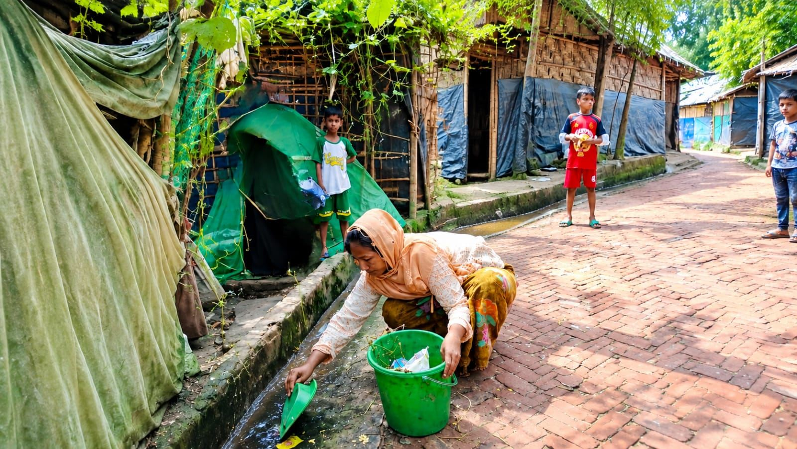
Safe water, dignified latrines and menstrual hygiene — designed with women, for women.

Primary care, emergency health response and health education for camp and host families.

Climate-resilient farming, solar fish dryers and women-led disaster preparedness on the coast.

Bringing host and Rohingya communities together and preventing violent extremism.
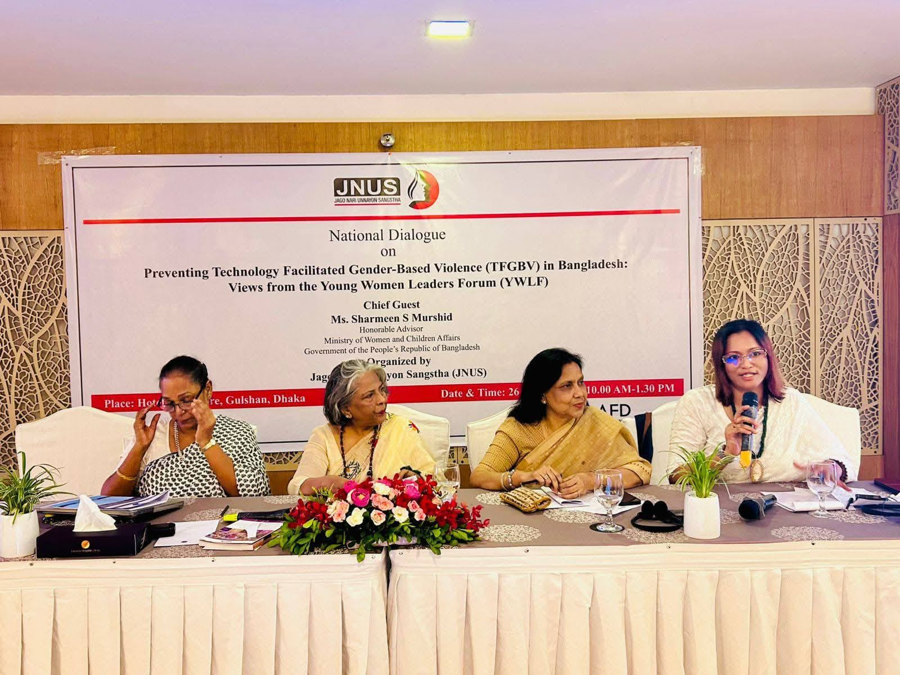
Evidence from the ground, carried to national dialogues and global policy tables.
How change happens
Our approach follows a woman's journey — from immediate safety, to economic independence, to a seat at the table where decisions about her life are made.
Women-friendly spaces, confidential case management, counselling and legal aid give survivors a safe place to start again.
Vocational training, start-up support and market links through Panchali turn skills into steady income — and income into choices.

Young women leaders' forums, women's groups and peace platforms give women the confidence and the networks to speak up — together.
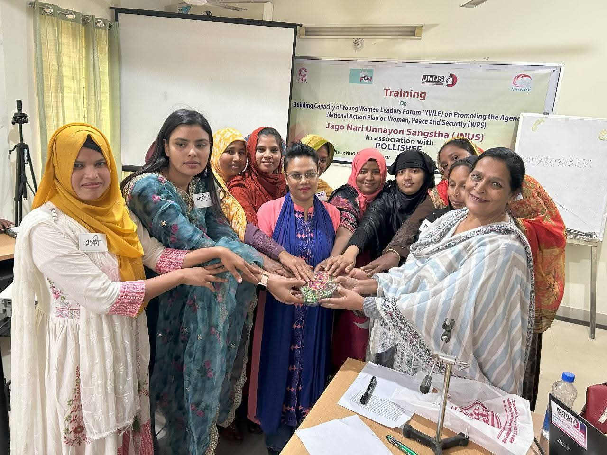
Research, national dialogues and global networks turn local evidence into better policy — so the next generation of women inherits fairer systems.
Our reach & impact
Every figure here comes from a JNUS programme on the ground — counted in households, women trained and forums formed.
43,170
people in 8,894 households set to benefit from the SHIFT WASH project in Camp 3 (2026–27).
5,048
refugee households served by gender-responsive water, sanitation & hygiene since 2023.
12,000
masks and 60 handwashing stations delivered during our COVID-19 response.
200
women trained in tailoring, handicrafts, dry-fish processing and driving through Means to Lead.
600
people reached with emergency health care after the Kutupalong camp fire.
30
local organisations trained to lead Education in Emergencies response.
Our programmes
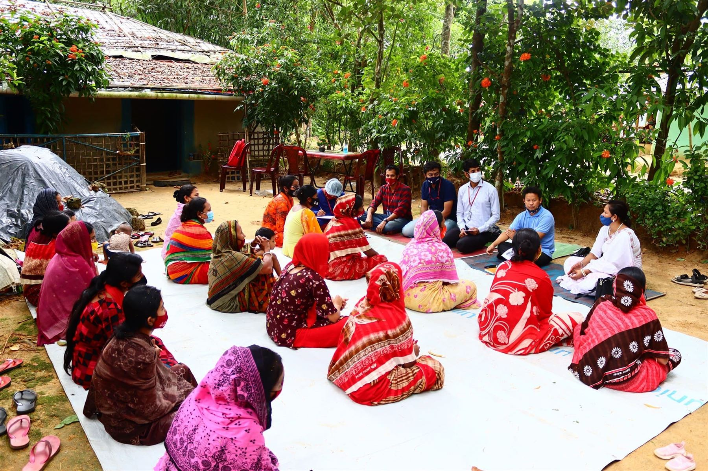
With the Danish Refugee Council, FCDO, ECHO and UN Women, we run community-based protection, case management and referral systems across Camps 3, 6, 8W, 8E, 10, 11, 12 and Palongkhali Union.

From Multi-Purpose Women Centres with UN Women and Sweden, to the Young Women Leaders Forum and climate-justice networks of women-led CSOs, we invest in women's leadership at every level.

As the focal WASH organisation in Camp 3, we keep water flowing, latrines safe and menstrual hygiene dignified — while helping coastal women adapt their livelihoods to a changing climate.
Give from anywhere
Most of our support comes from friends abroad who give in US dollars straight to our bank account in Bangladesh. Every gift goes to women-led work on the ground — no middle layers.
$25
could fund a confidential counselling session for a survivor of violence.
Give $25$50
could cover a month of tailoring training materials for one woman.
Give $50$100
could help a survivor access legal aid, referrals and safe transport.
Give $100$250
could give a woman her own sewing machine and start-up stock.
Give $250"To bring an end to all forms of violence and discrimination against women and girls — regardless of gender, race, religion and culture."
"To promote a just, inclusive and democratic society where women and girls lead sustainable development."
"Local women are not only beneficiaries of humanitarian aid — they are its leaders, its first responders and its future."
News & stories
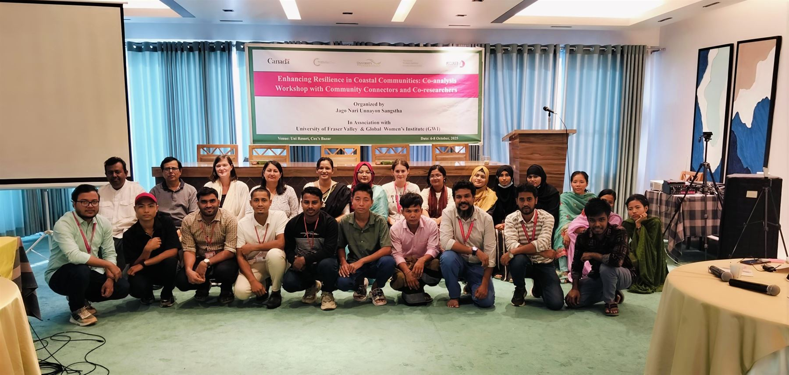
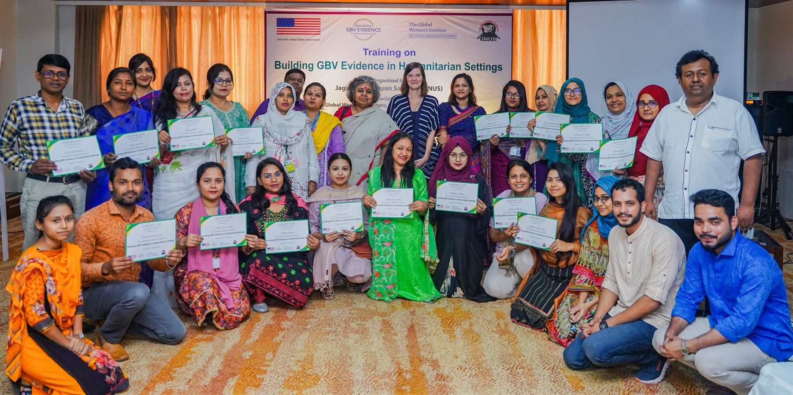
Our presence
From our head office at Ramu College Gate we work across four upazilas and the Rohingya camps of Ukhiya and Teknaf — and carry women's voices to Dhaka and beyond.
Ramu, Ukhiya, Teknaf & Cox's Bazar Sadar · Whykong & Palongkhali Unions
Camps 3, 5, 6, 8W, 8E, 10, 11, 12 & Kutupalong
Fishing communities facing cyclones, salinity & displacement
Policy dialogues in Dhaka · CIVICUS, ICVA, Start Network, Generation Equality
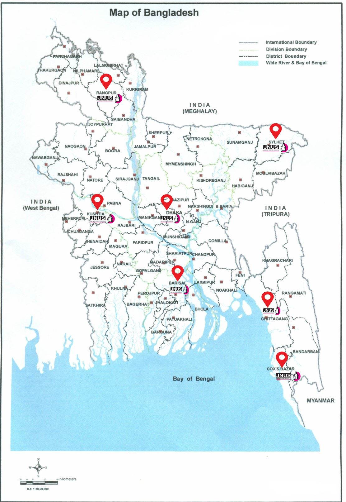
Newsletter
Quarterly updates on the women we work with, where your gift went, and what comes next. No spam, ever.